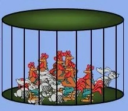

线性方程组 / 概念和基本问题
-
小学(鸡兔同笼)今有雉兔同笼，
上有三十五头，
下有九十四足，
问雉兔各几何？
鸡兔同笼.jpg -
初中(二元一次方程组)\[ \left\{\begin{array}{rrrrrrr} x& +& y &= & 35 && \\ 2x& + & 4y& = & 94 && \\ \end{array}\right. \]
-
现在(线性方程组：即,任意个变量及任意个方程构成的一次方程组.)